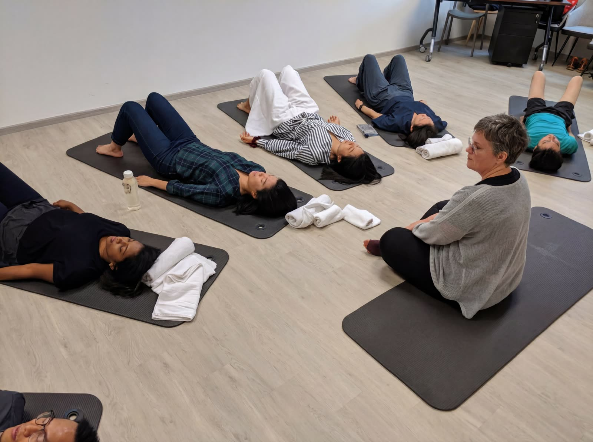

Rooted in neuroscience, Eastern wisdom and 25+ years of human development experience.
HummingBeing started with a personal realisation: that real transformation lives in the body — not in another strategy or framework. It was born from Isabelle’s own healing journey — through and out of the kind of environments that quietly deplete us.
Through gentle body-based practices rooted in neuroscience and Eastern wisdom, we help people release what they’ve been carrying — and find themselves back: empowered, respected and as healthy as possible.
Most personal development works from the neck up. We start in the body — where real change lives.
Rooted in polyvagal theory and somatic neuroscience. Change isn’t just possible — it’s built into your physiology.
We address mind, body, emotions and spirit together. True resilience isn't compartmentalised — it emerges when all dimensions are engaged and integrated.
Having worked with 40+ nationalities across Asia, Europe, the Americas and Russia, we create safe, respectful spaces where every background and identity is honoured.
Every practice we offer — TRE®, Somatic Coaching and Strozzi Bodywork — has a solid evidence base. We let results speak for themselves.
Quick fixes aren't what we're here for. We invest time in you — because the practices you build here are yours to keep for the rest of your life.
You will never be asked to relive or narrate anything difficult here. The body finds its own way — gently, quietly, at exactly the pace that feels right for you.
These traditions — TRE®, somatic coaching, mindfulness, Reiki — ask the same thing of every practitioner: humility, service, and a commitment to one’s own ongoing inner work. This is what Isabelle brings to every session — not an image, but a practice she lives herself.
The hummingbird beats its wings up to 200 times per minute — yet is never burned out. It hovers with precision, navigates with grace, and lives with a vibrancy that seems impossible given the energy it expends.
This is possible because its entire system is optimally regulated. It doesn't carry the residue of yesterday. Each moment, it's fully present and fully resourced — and that's the natural state your nervous system is designed for, before years of chronic stress layer over it.
The hummingbird animal symbolizes joy, resilience, adaptability, perseverance, presence and lightness of being. This little bird also symbolises the ability to find beauty in the little things in life and to appreciate every moment. Remember to have fun and enjoy your surroundings and the moments that make you happy.
The hummingbird’s positive energy is omnipresent; they are always on the move and never seem to tire. They can cover impressive distances during their migrations. This reminds us how important it is to take care of our physical and mental health, while having a positive attitude in our lives.

HummingBeing is part of BHD Asia & BHD Japan — a boutique Leadership Coaching and Human Development consultancy established in Singapore in 2012.
Our work extends BHD's mission into the body — offering somatic practices that complement leadership coaching and support anyone ready to access more of who they already are.
Explore BHD Asia